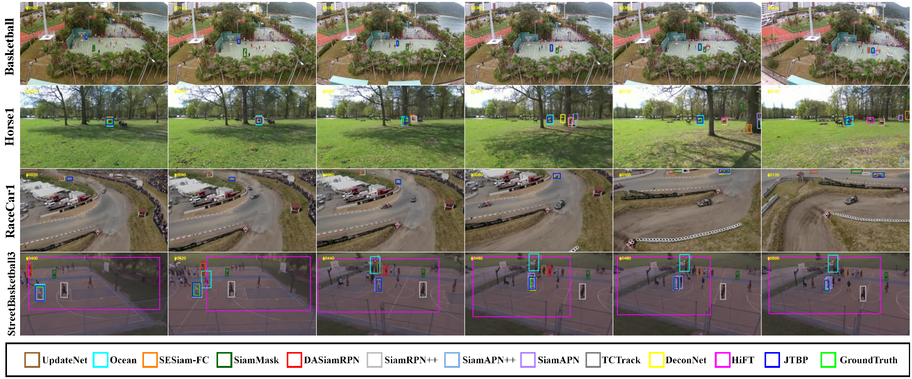
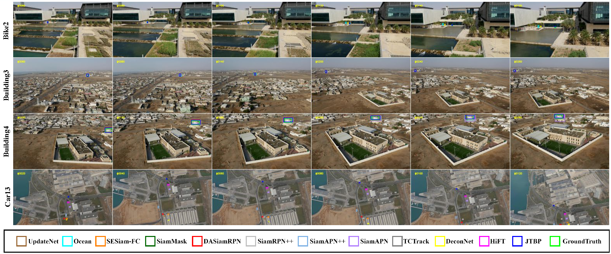

Joint Target and Background Temporal Propagation for Aerial Tracking
Lei Xu,
Wensheng Cheng,
Chang Xu,
Wen Yang
School of Electronic Information, Wuhan University, Wuhan, China
Department of Computer Science, Stony Brook University, NY 11794, United States
Abstract
Tracking objects from aerial imagery is significant in numerous remote sensing-based applications, including environmental monitoring, security surveillance, and search \& rescue. However, tracking specific targets in aerial images is still challenging due to target appearance variation and similar object distraction. To address these challenges, we propose a joint target and background temporal propagation approach for aerial tracking, dubbed JTBP. JTBP leverages the temporal coherence present in video sequences and consists of two modules: the target temporal propagation (TTP) module and the background temporal propagation (BTP) module. The former adjusts the template by mining target-specific information from the temporal domain. It utilizes a key-value mechanism to weigh the channels of the template based on target-specific features, allowing the template to adapt to variations in target appearance. The latter identifies background objects from the temporal domain and effectively distinguishes similar objects by leveraging the temporal coherence of objects in the background. On four benchmarks, the new tracker JTBP shows consistent improvements over baselines and achieves leading performance compared to advanced trackers. Notably, our approach outperforms the state-of-the-art method by 2.8 points in terms of success rate on UAV112Track_L dataset.
Introduction
In this work, we propose a Joint Target and Background Temporal Propagation approach for tracking objects from aerial imagery, termed as JTBP. As illustrated in Fig. 1, JTBP consists of two modules: the target temporal propagation module (TTP) and the background temporal propagation (BTP) module. The TTP module is responsible for mining target-specific information from the temporal domain. It includes a target temporal propagation block that utilizes a key-value mechanism to weigh the channels of the template based on target-specific features. This enables the template to adapt to variations in target appearance commonly observed in remote sensing images. The BTP module focuses on extracting background information from the temporal domain. It incorporates a background temporal propagation block that leverages the prior knowledge of object positions and shapes to distinguish similar objects in the background. By matching the target with the background objects based on their spatial and shape priors, the background propagation module effectively suppresses the response of background distractor objects.
To verify the efficacy of our suggested approach and modules, we conduct extensive experiments on four publicly available datasets, comparing them against existing trackers. The experimental results demonstrate that our target and background propagation mechanisms effectively address the challenges of target appearance variation and background object distraction. Moreover, compared to current advanced trackers, our JTBP achieves leading performance and exhibits stable performance improvements compared to the baseline. Overall, our proposed JTBP approach, with its target and background propagation modules, provides an effective solution for robust object tracking in aerial imagery, surpassing existing methods and achieving leading performance.

Figure 1. Overall framework of our JTBP. It decouples the temporal cues into the target and background cues in the temporal domain. It tackles the challenge of target appearance variation and similar object distraction from two aspects: (1) propagating target information in the temporal domain to adapt the template to the change of the target appearance variations (2) leveraging background priors in the temporal domain to differentiate the tracked target from the similar background objects.
|
|
In summary, the contributions of this paper are listed as follows:
- We present a joint target and background propagation framework, which hierarchically exploits target and background temporal information to simultaneously address the challenges of target appearance variation and similar object distraction.
- We propose a target temporal propagation module, which adaptively adjusts the template by weighting the target-specific feature channels, effectively handling variations in the target’s appearance.
-
We propose a background temporal propagation module, which identifies background distractors close to the target in the temporal domain, effectively suppressing the response of distractors.
-
The proposed JTBP achieves leading performance on four public datasets, demonstrating the effectiveness of our approach.
|
Experimental Results
|
A Comparison of Different Methods on DTB70
|

Figure 2. Qualitative comparison on the DTB70 dataset. From the top to bottom are the tracking results on the BMX4, Horse1, RcCar7, and Soccer2 sequences of the DTB70 datasets. The target regions are enlarged in the bottom right, while the green squares denote the ground truth.
|
A Comparison of Different Methods on UAV123@10fps
|

Figure 3. Qualitative comparison on the UAV123@10fps dataset. From the top to bottom are the tracking results on the Boat9, Car16, Person3, and Wakeboard3 sequences of the UAV123@10fps dataset.The target regions are enlarged in the bottom right, while the green squares denote the ground truth.
|
Citation
-
<
@article{JTBP,
title={Joint Target and Background Temporal Propagation for Aerial Tracking},
author={Xu, Lei, Wensheng Cheng, Xu, Chang and Yang, Wen},
journal={},
volume={},
pages={},
year={},
publisher={}
}
>
|